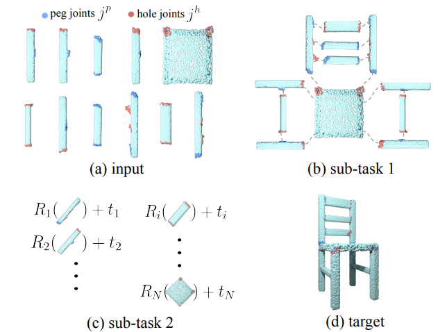
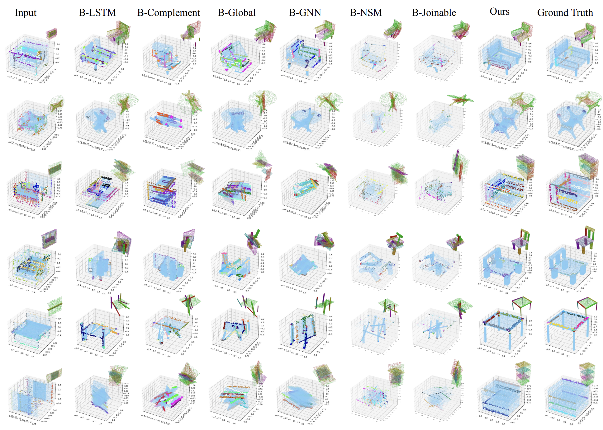

Shape assembly composes complex shapes geometries by arranging simple part geometries and has wide applications in autonomous robotic assembly and CAD modeling. Existing works focus on geometry reasoning and neglect the actual physical assembly process of matching and fitting joints, which are the contact surfaces connecting different parts. In this paper, we consider contacting joints for the task of multi-part assembly. A successful joint-optimized assembly needs to satisfy the bilateral objectives of shape structure and joint alignment. We propose a hierarchical graph learning approach composed of two levels of graph representation learning. The part graph takes part geometries as input to build the desired shape structure. The joint-level graph uses part joints information and focuses on matching and aligning joints. The two kinds of information are combined to achieve the bilateral objectives. Extensive experiments demonstrate that our method outperforms previous methods, achieving better shape structure and higher joint alignment accuracy.

Figure 1. Joint-based 3D Part Assembly Task. (a) Joint-annotated part point cloud input where blue points indicate peg joints and red points denote hole joints. (b) joint pairing process to produce a bipartite matching between pegs and holes (c) joint-matching-aware SE(3) pose prediction for each part to achieve the target (d) of assembling a shape of a valid structure and with all pegs and holes aligned. |

Figure 3. Qualitative Results. |
@inproceedings{li2024jointassembly,
title={Category-level multi-part multi-joint 3d shape assembly},
author={Li, Yichen and Mo, Kaichun and Duan, Yueqi and Wang, He and Zhang, Jiequan and Shao, Lin},
booktitle={Proceedings of the IEEE/CVF Conference on Computer Vision and Pattern Recognition},
pages={3281--3291},
year={2024}
}